Bootstrap是一个用于快速开发web应用程序和网站的前端框架，主要是基于HTML、CSS、JavaScript的
Bootstrap优势：
1. 移动设备优先：自 Bootstrap 3 起，框架包含了贯穿于整个库的移动设备优先的样式。
2. 浏览器支持：所有的主流浏览器都支持 Bootstrap。
3. 响应式设计：Bootstrap 的响应式 CSS 能够自适应于台式机、平板电脑和手机.更多有关响应式设计的内容详见
Bootstrap 响应式设计 。
Bootstrap包的内容：
1. 基本结构：Bootstrap 提供了一个带有网格系统、链接样式、背景的基本结构
2. CSS：Bootstrap 自带以下特性：全局的 CSS 设置、定义基本的 HTML 元素样式、可扩展的 class，以及一个先进的网格系统
3. 组件：Bootstrap 包含了十几个可重用的组件，用于创建图像、下拉菜单、导航、警告框、弹出框等等
4. JavaScript 插件：Bootstrap 包含了十几个自定义的 jQuery 插件。您可以直接包含所有的插件，也可以逐个包含这些插件
5. 定制：您可以定制 Bootstrap 的组件、LESS 变量和 jQuery 插件来得到您自己的版本
Bootstrap包结构：
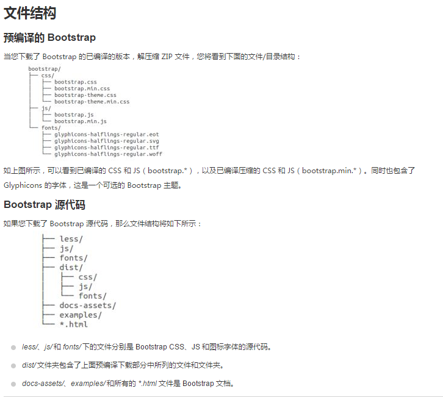
Bootstrap CSS概述：
移动设备优先是 Bootstrap 3 的最显著的变化。
为了让 Bootstrap 开发的网站对移动设备友好，确保适当的绘制和触屏缩放，需要在网页的 head 之中添加 viewport meta 标签，如下所示：
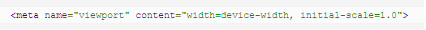
width 属性控制设备的宽度。假设您的网站将被带有不同屏幕分辨率的设备浏览，那么将它设置为 device-width 可以确保它能正确呈现在不同设备上。
initial-scale=1.0 确保网页加载时，以 1:1 的比例呈现，不会有任何的缩放。
在移动设备浏览器上，通过为 viewport meta 标签添加 user-scalable=no 可以禁用其缩放（zooming）功能。
通常情况下，maximum-scale=1.0 与 user-scalable=no 一起使用(这种方式我们并不推荐所有网站使用)。这样禁用缩放功能后，用户只能滚
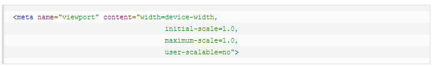
响应式图像：
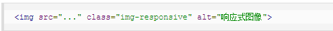
通过添加 img-responsive class 可以让 Bootstrap 3 中的图像对响应式布局的支持更友好
避免跨浏览器的不一致：
Bootstrap 使用 Normalize 来建立跨浏览器的一致性。
Normalize.css 是一个很小的 CSS 文件，在 HTML 元素的默认样式中提供了更好的跨浏览器一致性。
容器（Container）：
Bootstrap 3 的 container class 用于包裹页面上的内容.默认情况下容器是不可嵌套的
浏览器支持：* Bootstrap 支持 Internet Explorer 8 及更高版本的 IE 浏览器。
Bootstrap 网格系统：(Grid System)
Bootstrap 提供了一套响应式、移动设备优先的流式网格系统，随着屏幕或视口（viewport）尺寸的增加，系统会自动分为最多12列
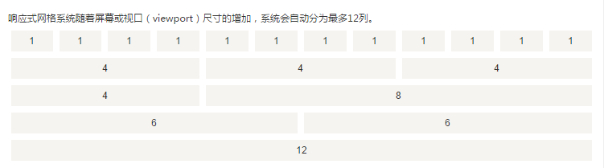
Bootstrap网格系统的工作原理
网格系统通过一系列包含内容的行和列来创建页面布局。下面列出了 Bootstrap 网格系统是如何工作的：
行必须放置在 .container class 内，以便获得适当的对齐（alignment）和内边距（padding）
使用行来创建列的水平组
内容应该放置在列内，且唯有列可以是行的直接子元素。
预定义的网格类，比如 .row 和 .col-xs-4，可用于快速创建网格布局。LESS 混合类可用于更多语义布局
列通过内边距（padding）来创建列内容之间的间隙。该内边距是通过 .rows 上的外边距（margin）取负，表示第一列和最后一列的行偏移
网格系统是通过指定您想要横跨的十二个可用的列来创建的。例如，要创建三个相等的列，则使用三个 .col-xs-4
媒体查询:媒体查询是非常别致的"有条件的 CSS 规则"。它只适用于一些基于某些规定条件的 CSS。如果满足那些条件，则应用相应的样式。
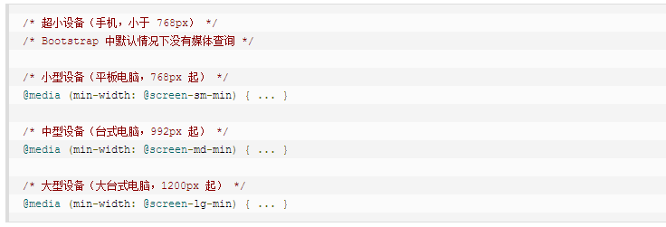
我们有时候也会在媒体查询代码中包含 max-width，从而将 CSS 的影响限制在更小范围的屏幕大小之内。
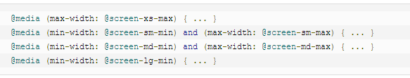
网格选项：下表总结了 Bootstrap 网格系统如何跨多个设备工作：
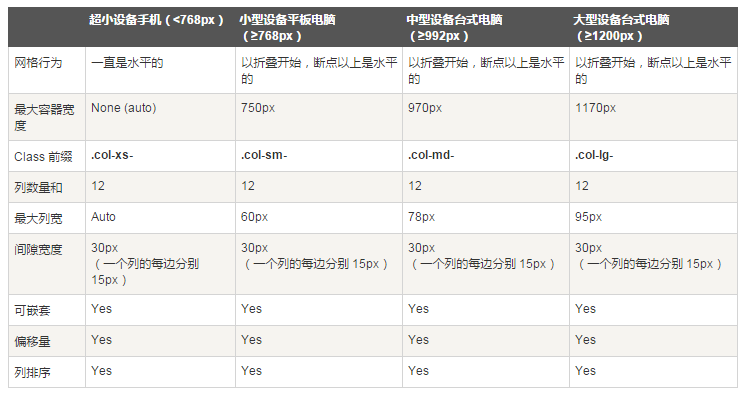
Bootstrap 排版：
Bootstrap 使用 Helvetica Neue、 Helvetica、 Arial 和 sans-serif 作为其默认的字体栈。
使用 Bootstrap 的排版特性，您可以创建标题、段落、列表及其他内联元素
更多内容
缩写：鼠标放上去显示全部内容
WWW
RSS
地址标签:Address
mailto@somedomain.com 常用的排版类：
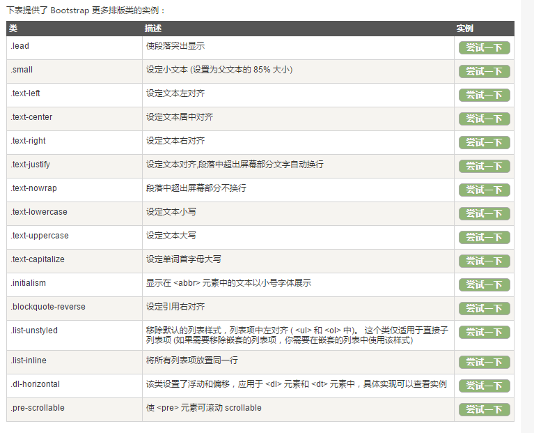
Bootstrap 代码：
Bootstrap 允许您以两种方式显示代码：
第一种是 "code" 标签。如果您想要内联显示代码，那么您应该使用 "code" 标签。
第二种是 "pre" 标签。如果代码需要被显示为一个独立的块元素或者代码有多行，那么您应该使用 "pre" 标签
Bootstrap 所提供的一些表格元素
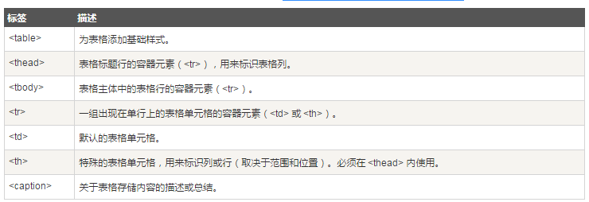
Bootstrap 表格类(table类)：
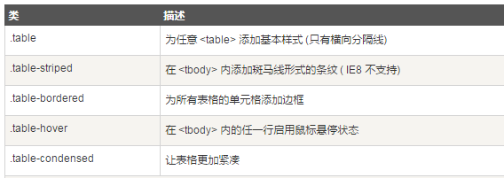
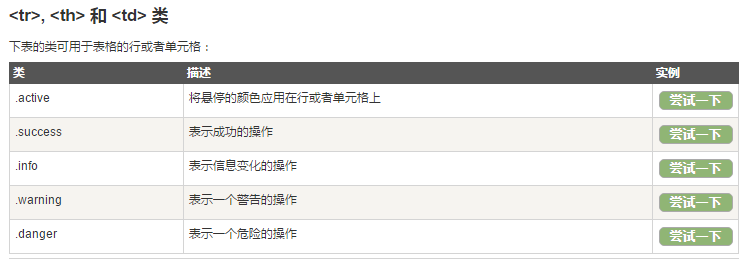
| 名称 | 城市 |
|---|---|
| Tanmay | Bangalore |
| Sachin | Mumbai |
条纹表格：table-striped--在 tbody内的行上看到条纹
边框表格：table-bordered--每个元素周围都有边框，且占整个表格是圆角的
悬停表格：table-hover--当指针悬停在行上时会出现浅灰色背景
精简表格：table-condensed--行内边距（padding）被切为两半，以便让表看起来更紧凑
响应式表格:给table添加table-responsive类
通过把任意的 .table 包在 .table-responsive class 内，您可以让表格水平滚动以适应小型设备（小于 768px）。当在大于 768px 宽的大型设备上查看时，您将看不到任何的差别。
通过添加 .table-hover class，当指针悬停在行上时会出现浅灰色背景
Bootstrap 复辅助类：
辅助类详细
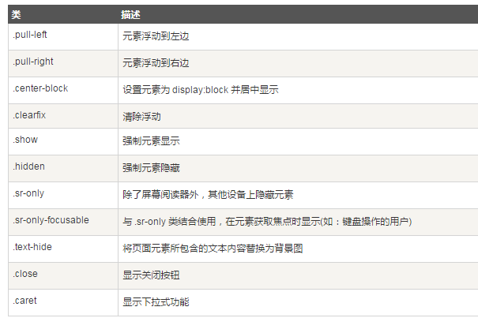
Bootstrap 框架：
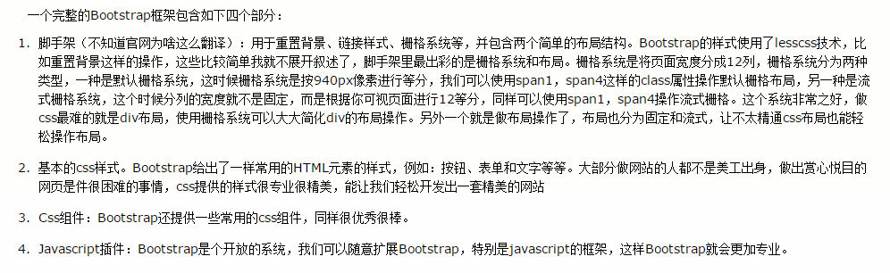
Bootstrap 提供了三个可对图片应用简单样式的 class
img-rounded：添加 border-radius:6px 来获得图片圆角。.img-circle：添加 border-radius:50% 来让整个图片变成圆形。
.img-thumbnail：添加一些内边距（padding）和一个灰色的边框。

响应式图片：通过在 img标签添加 .img-responsive 类来让图片支持响应式设计。 图片将很好地扩展到父元素
Bootstrap按钮：任何带有类.btn 的元素都会继承圆角灰色按钮的默认外观
以下样式可用于a, button, 或 input 元素上：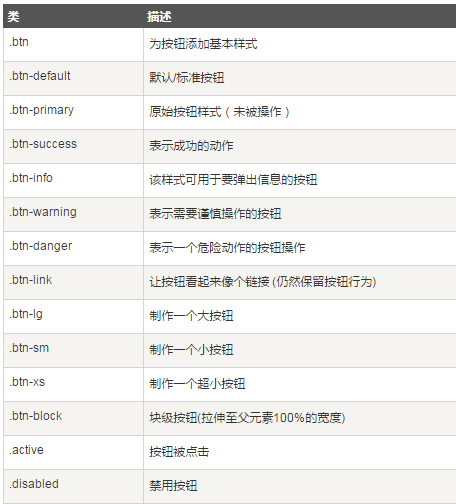
按钮的大小：
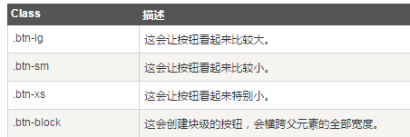
按钮激活状态:
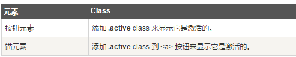
按钮禁用状态：
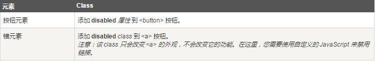